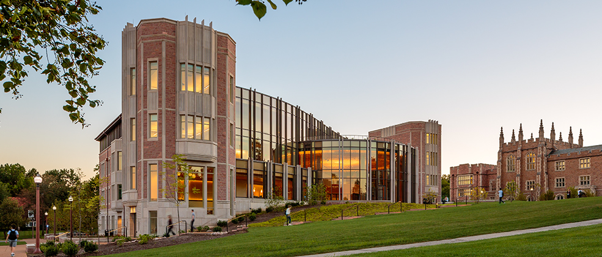

Freshmen Student Information
Education Quality
Wash U is known as one of the most challenging and competitve universities around.
The University is most well known for its medical school, though its engineering program, business program and achitecture program are also very highly reviewed. The school has about 6,000 undergraduate students, and roughly the same amount of graduate students (though not all use the main Danforth Campus)
The University sets itself apart through its incredible facilities, high quality professors, diverse specialities, and beautiful campus.

Reputation
Though not a universally known university like many ivy leagues, Wash U has been an up and coming name for the last couple of years. The unviersity is becoming more well known due to its low acceptance rate, excellent campus, and phenomenal education quality.
Often called "The Harvard of the Midwest", Wash U is fastly becoming one of the most sought after universities.
As of 2015, Wash U ranked 15th on the US News and World Report Rankings, tied with Vanderbilt University. However, it is expected that Wash U's ranking will continue to improve.
Extra Cirriculars
Sports
Wash U is a Division 3 school with a multitude of athletics teams. Though it is true that there is not a lot of support from students outside of the athetlics community, this does not mean that the teams preform poorly. The university's track and field team were the UAA Champions in both the men's and women's categories. Other teams preform similaraly well
The univeristy's club and intramural teams are also very popular among students. The teams are suprpisingly competetive, but the lower time commitment draws a large poriton of the student body
Music
Music is actually a very popular major and minor at Wash U. Aside from their excellent undergraduate and graduate programs, the unversity also has several out-of-class programs that are utelized by students
A capella is a very popular extracirricular at Wash U, there are several different a capella groups which range in terms of their collective gender, music type, and time intensity. The university also has several student bands, which play at events across campus. A variety of chiors, jazz bands, and orchestras also play on campus.
Service
Many of Wash U's students are inovlved in a service. The Gephardt Institute for Civic and Community Engagement outlines the different service groups around campus. The unviersity also has a service fair, during which student groups set up tables explaining their different community outreaches. Sororities and fraternities on campus are also very active in the community.
The school also employs students as tutors and teaching assistants for courses throughout the year. These jobs provide services for the students on campus, but have the benefit of being a paying job, provided you are selected. These programs are using fairly competitive.
Return to Top